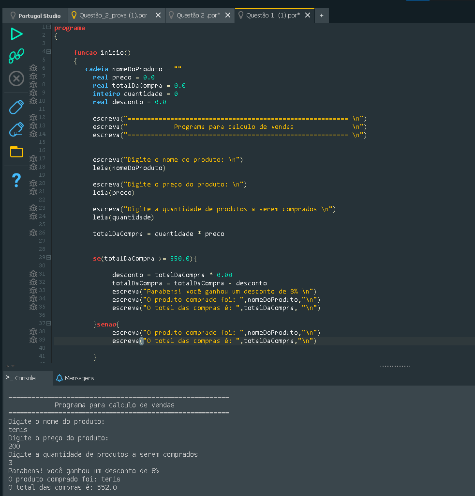
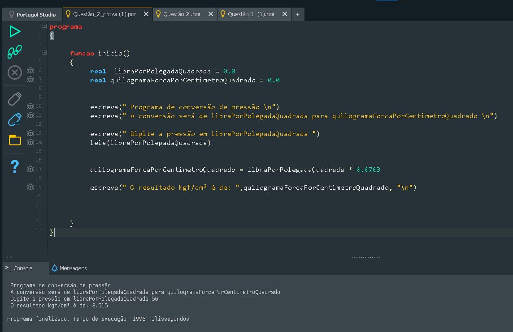
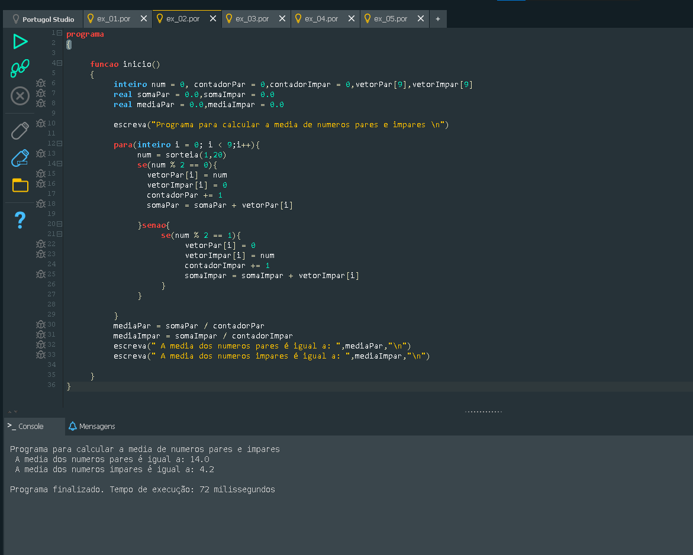
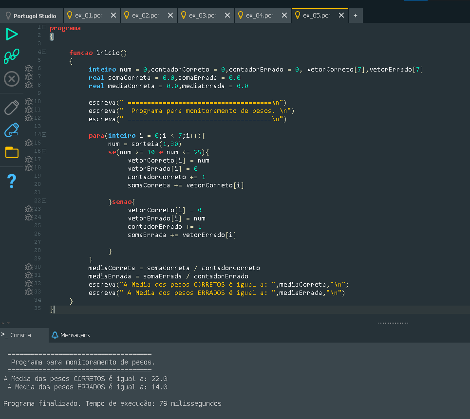

LÓGICA COMPUTACIONAL
Durante as aulas de Lógica Computacional, tivemos a oportunidade de mergulhar no processo de construção de raciocínio lógico e estruturado, fundamental para a programação. Começamos estudando algoritmos, que são sequências de instruções usadas para resolver problemas, e aprendemos a representá-los visualmente através de fluxogramas, compreendendo cada símbolo e sua função no fluxo do programa. Esse aprendizado inicial nos ajudou a pensar de forma organizada e a planejar soluções antes de codificar.
Em seguida, exploramos o Portugol e o Portugol Studio, que nos proporcionaram um ambiente prático para escrever e testar nossos programas, permitindo aplicar conceitos teóricos de maneira imediata. Trabalhamos com variáveis e constantes, entendendo a importância de armazenar e manipular informações de forma segura e eficiente. Aprendemos sobre tipos de dados como booleanos, caracteres, cadeias de texto (strings), inteiros, reais e vetores, que são essenciais para a construção de programas funcionais e versáteis.
Além disso, tivemos contato com vetores, permitindo organizar conjuntos de dados e desenvolver soluções mais complexas, e praticamos a criação de funções para estruturar nossos programas de forma modular e reutilizável. Durante o curso, realizamos diversos exercícios práticos, desenvolvendo programas que simulavam situações reais, o que facilitou a compreensão de conceitos abstratos e fortaleceu nosso pensamento crítico e analítico.
Esse percurso não apenas nos introduziu à programação de forma gradual e prática, mas também preparou-nos para enfrentar desafios de desenvolvimento de sistemas, mostrando como a lógica computacional está presente em diversas áreas da tecnologia, desde aplicativos simples até projetos mais complexos de automação e análise de dados. A experiência prática com fluxogramas, Portugol, vetores e funções consolidou nossa capacidade de planejar, implementar e testar soluções computacionais, tornando o aprendizado significativo e aplicável.
O que são fluxogramas? Qual a sua simbologia básica?
Fluxogramas são representações gráficas de algoritmos ou processos. Eles permitem visualizar de forma clara o passo a passo de uma sequência de instruções, mostrando como os dados fluem e como as decisões são tomadas. A simbologia básica inclui o oval, usado para indicar início e fim; o retângulo, que representa processos ou ações; o losango, que simboliza decisões condicionais; e o paralelogramo, que indica entradas e saídas de dados. Essa representação ajuda a identificar erros, otimizar processos e comunicar soluções de forma objetiva, sendo amplamente usada em programação, administração e engenharia.
O que são algoritmos? Onde são usados?
Algoritmos são sequências finitas e ordenadas de instruções que resolvem problemas ou realizam tarefas específicas. Eles formam a base de qualquer programação, mas não se limitam a computadores: podem ser aplicados em receitas de culinária, planejamento de rotinas, cálculos matemáticos e até no controle de máquinas industriais. Em programação, algoritmos são usados para definir exatamente o que o computador deve fazer, passo a passo, garantindo que a lógica esteja correta antes de iniciar a codificação.
O que é o Portugol? O que é o Portugol Studio?
Portugol é uma linguagem didática de programação que utiliza comandos em português, tornando a escrita de algoritmos mais intuitiva para iniciantes. Ela permite desenvolver programas sem precisar aprender sintaxes complexas de linguagens como C ou Java, focando no raciocínio lógico. O Portugol Studio é um ambiente integrado de desenvolvimento (IDE) que possibilita criar, executar e depurar algoritmos escritos em Portugol. Ele oferece ferramentas visuais que ajudam a testar o código e visualizar resultados em tempo real, facilitando a aprendizagem e o entendimento da lógica de programação.
O que são variáveis e constantes?
Variáveis são espaços de memória que armazenam valores que podem mudar durante a execução de um programa. Por exemplo, é possível usar uma variável para armazenar a idade de um usuário ou a pontuação de um jogo, alterando esses valores conforme necessário. Constantes, por outro lado, são valores fixos que não podem ser alterados após serem definidos, servindo para representar dados que permanecem iguais durante toda a execução do programa, como o valor de π ou o número máximo de tentativas permitidas em um sistema.
Quais os tipos de dados mais usados em algoritmos (Portugol)?
- Booleano: representa verdadeiro ou falso, usado em decisões condicionais.
- Caracter (char): armazena um único caractere, como ‘A’ ou ‘3’.
- Cadeia (string): armazena sequências de caracteres, como nomes ou frases.
- Inteiro (int): valores numéricos sem casas decimais, como 10 ou -5.
- Real (float/double): valores numéricos com casas decimais, como 3,14 ou 9,81.
- Vetor (array): permite armazenar uma coleção de elementos do mesmo tipo, facilitando manipulação de listas ou sequências de dados.
Exemplos de programas em portugol usando funções e vetores:




Sobre o que mais você deseja conhecer?